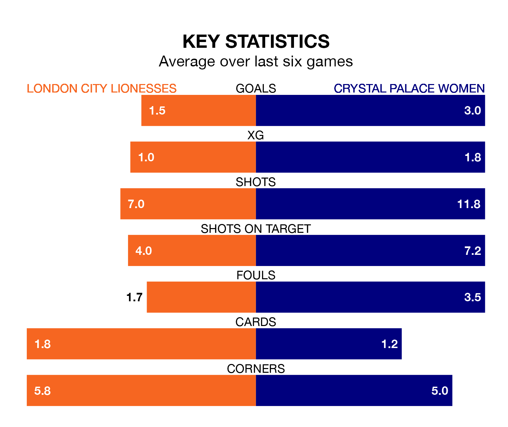

Mid-season relegation candidates London City Lionesses face a challenge against high-flying Crystal Palace Women at Princes Park on Sunday.
London City Lionesses are ninth in the FA Women's Championship table, and have picked up three wins and three draws in their 12 games to date.
Crystal Palace, meanwhile, are fourth in the standings with 21 points, having won six and drawn three of their first 11 matches, and are two points behind table-toppers Birmingham City Women.
With 35 goals in 11 games so far this season, Crystal Palace are the league's highest scorers with 3.2 goals per game. And they are conceding at an average rate, letting in 15 goals at a rate of 1.4 per game.
London City, meanwhile, are below average scorers, with 1.2 goals per game, compared to a league average of 1.4. They have conceded 1.8 goals per game.
In Elise Hughes, the visitors have the league's most on-form striker so far this season. She has notched 12 goals in 11 appearances.
Her goal rate of one every 83 minutes is quicker than that of Chantelle Boye-Hlorkah, the Lionesses's top scorer with a goal every 153 minutes, and a total of four goals in nine games.
In the last five years, London City and Crystal Palace have played each other on nine occasions. They won three each, and they drew three times.
On average, the Lionesses scored 1.7 goals and Crystal Palace 1.3 in those matches.
Their last meeting was on October 15, when Crystal Palace won 6-1 at home.
The home team are in mixed form in the FA Women's Championship, with two wins and a draw from their last six games.
With three wins and a draw over that period, Crystal Palace's form is better – they have taken 10 points from 18, compared to London City's seven.
London City's last match was on December 17, a 3-3 draw against Watford Women, with Boye-Hlorkah, Lois Joel and Lucy Fitzgerald getting the goals for the Lionesses.
Crystal Palace drew 1-1 with Reading Women last time out, also on December 17, with Elise Hughes on the scoresheet.
Updated: 11:31, 09/01/24